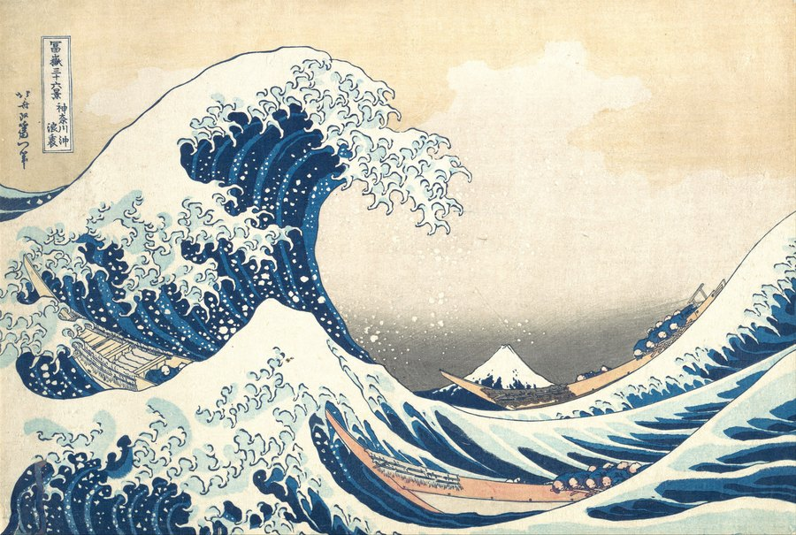
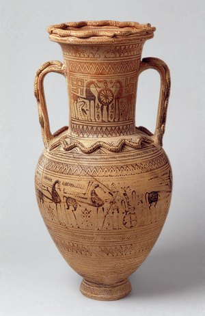
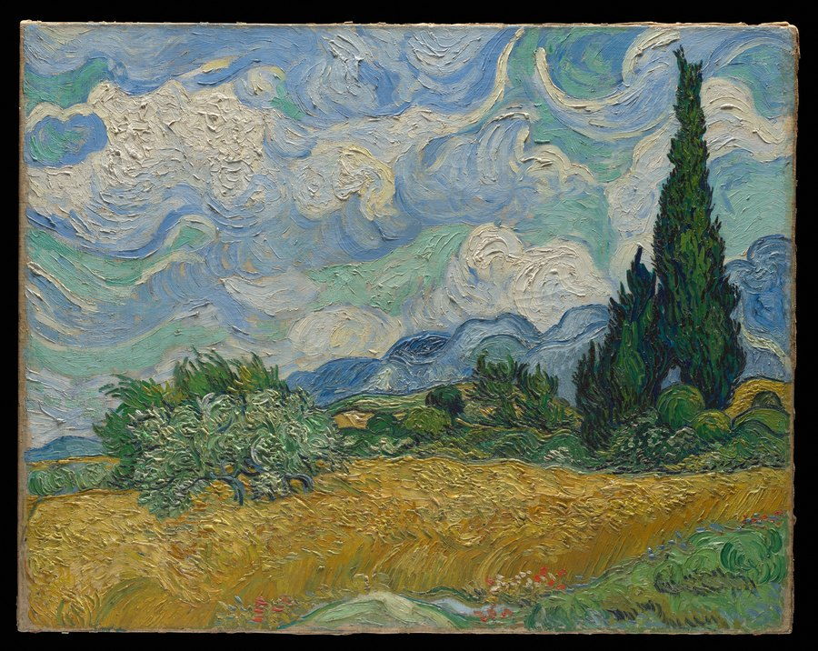
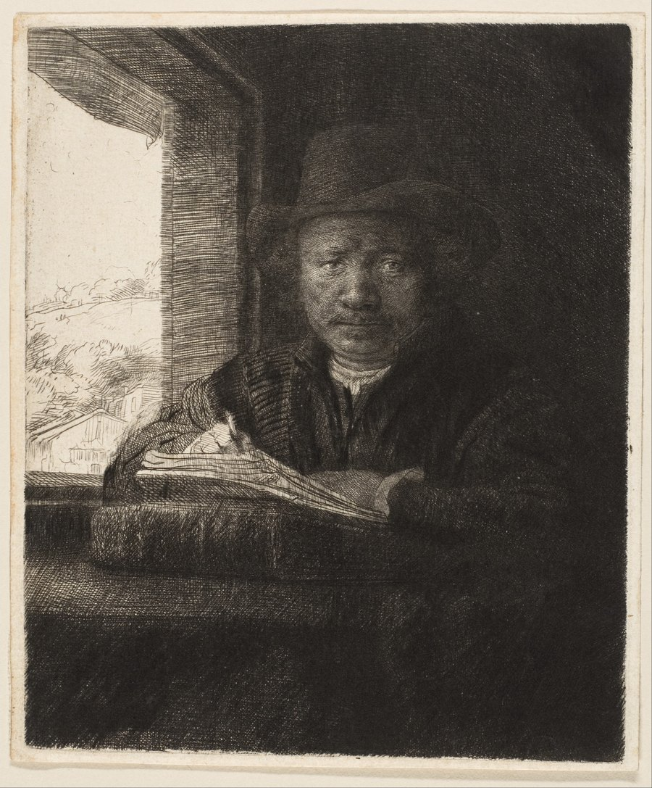
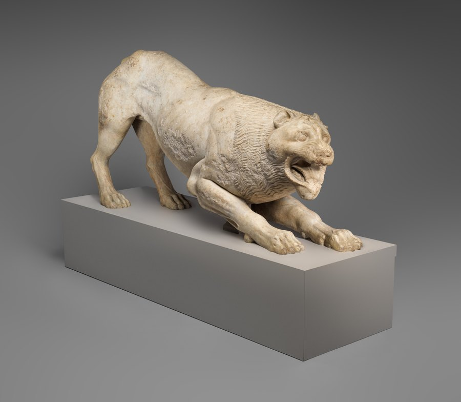
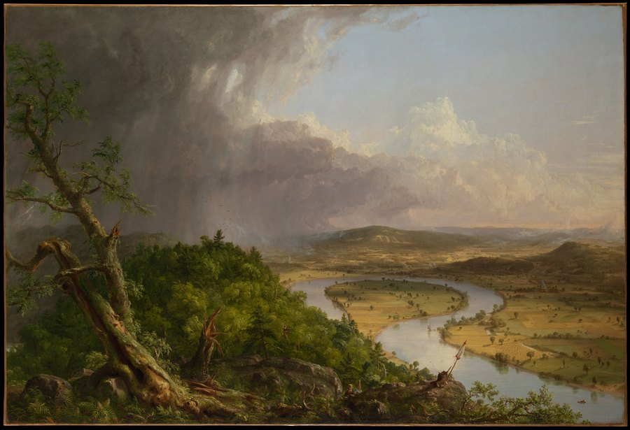

How can the Elements of Art and Principles of Design be found and captured in the world around us?
Now that you know how to keep your digital art original, it is time to explore what makes artwork look and feel complete. Every piece of art, digital or traditional, is built using two main ideas: the Elements of Art and the Principles of Design. This week you learn both, and you start applying them on purpose in your own compositions.
👀 PART 1 · LOOK FIRST
Elements of Art are the basic visual ingredients artists use to build an artwork: think of them as the tools you use, like shape, color, and line. Principles of Design are the rules or guidelines for using those tools well. They help artists organize the elements so a piece feels balanced, interesting, and complete. Look at the real example below of one principle of design in action: balance.
A real-world example of a principle of design: symmetrical balance. Each wing repeats the same shapes and colors as a mirror image of the other, so the whole insect reads as one balanced, complete visual.
💭 QUICK CHECK-IN · NO WRONG ANSWER
Look at your phone's home screen or your desktop right now. What is one Element of Art or Principle of Design you can spot?
📚 PART 2 · THE ELEMENTS OF ART
Every piece of digital art, whether a photo edit, a game character, or an abstract composition, is built from these seven elements.

LineA path created by a moving point. Lines show direction, create movement, or define shapes. Katsushika Hokusai, Under the Wave off Kanagawa (The Great Wave), ca. 1830–32, woodblock print. Metropolitan Museum of Art, public domain.

ShapeA flat, enclosed area made when lines connect. Shapes can be geometric or organic. Greek, Attic, terracotta neck-amphora, ca. 710 BCE. Metropolitan Museum of Art, public domain.

ColorThe visual quality produced by light reflection. Color has hue, value, and intensity. Vincent van Gogh, Wheat Field with Cypresses, 1889, oil on canvas. Metropolitan Museum of Art, public domain.

ValueHow light or dark something appears. Value creates contrast, depth, and mood. Rembrandt van Rijn, Self-Portrait Etching at a Window, 1648, etching. Metropolitan Museum of Art, public domain.

FormA 3D version of a shape with height, width, and depth. Form can be real or implied by shading. Greek, marble statue of a lion, ca. 400–390 BCE. Metropolitan Museum of Art, public domain.
TextureHow something looks or feels. Texture can be actual (touchable) or visual (only looks rough or smooth). NASA, Apollo 11 astronaut bootprint in lunar soil, July 20, 1969. Public domain.

SpaceThe area around, between, and within objects. Space creates foreground, middle ground, and background. Thomas Cole, The Oxbow, 1836, oil on canvas. Metropolitan Museum of Art, public domain.
Images: Metropolitan Museum of Art Open Access and NASA, all public domain.
💡 WHY THIS MATTERS
The Elements of Art and Principles of Design are the foundation of all visual art. They help you communicate ideas clearly, build visual balance, develop strong compositions, and experiment with confidence. Once you understand the basics, you can break the "rules" on purpose, which is very different from breaking them by accident.
🔍 PART 3 · THE PRINCIPLES OF DESIGN
If the Elements are your ingredients, the Principles are your recipe: the guidelines for arranging elements so a composition works.
Balance: the distribution of visual weight. Balance can be symmetrical, asymmetrical, or radial.
Emphasis: the area that stands out or draws attention first.
Movement: the path the viewer's eye takes through the artwork.
Pattern: the repeated use of shapes, colors, or lines to create a consistent design.
Repetition: reusing visual elements for unity and rhythm.
Rhythm: a visual beat that makes an artwork feel active and flowing, created by repeating elements with variation.
Proportion: the size relationship between parts of an artwork.
Variety: using different elements together to create interest and avoid monotony.
Unity: the sense that all parts of the artwork belong together.
In digital composition, these principles are decisions you make in Pixlr E, not accidents. Here is the same idea applied two ways.
Elements of Art
What you use to build the artwork: line, shape, color, value, form, texture, space. These are your raw materials, placed with the Shape and Brush tools, color picker, and layers.
Principles of Design
How you arrange those materials: balance, emphasis, movement, pattern, repetition, rhythm, proportion, variety, unity. These are choices about layout, size, and repetition inside your canvas.
Before you reveal: in your notebook, sketch or describe a simple composition (three shapes) that uses emphasis to make one shape the clear focal point. Then click to compare your idea.
One way to create emphasis: make the focal shape larger, give it the highest-contrast color against the background, and place the other two shapes smaller and duller so the eye lands on the focal shape first. There is no single correct layout: the test is whether a viewer's eye goes to your intended shape first.
⚡ TRY IT · ELEMENT OR PRINCIPLE?
Read each term, decide if it is an Element of Art or a Principle of Design, then check your answer.
Rhythm: a visual beat created by repeating elements with variation.
Texture: how something looks or feels, actual or visual.
Emphasis: the area of an artwork that draws the viewer's attention first.
🎨 APPLYING THIS IN PIXLR E
In Pixlr E, each shape or brush stroke you add becomes its own layer. Use the Layers panel to check your composition for balance: hide one layer at a time and ask whether the piece still feels complete. Use the Move tool to nudge shapes until one element clearly leads the eye (emphasis), and duplicate a shape a few times at different sizes to build rhythm or pattern.
⚠️ WORTH KNOWING · AI AND COMPOSITION
An AI image generator can produce a finished-looking picture, but it cannot show you why a composition works. Naming which Elements and Principles are present in an image, and deciding how to arrange your own, is a skill you build by practicing it yourself. That is what this week's project checks.
📝 VOCABULARY
Elements of ArtThe basic visual ingredients artists use: line, shape, color, value, form, texture, space.
Principles of DesignThe guidelines for arranging elements: balance, emphasis, movement, pattern, repetition, rhythm, proportion, variety, unity.
BalanceThe distribution of visual weight; symmetrical, asymmetrical, or radial.
EmphasisThe area of an artwork that draws the viewer's eye first.
MovementThe path the viewer's eye takes through an artwork.
Pattern & RepetitionReusing shapes, colors, or lines for consistency and unity.
RhythmA visual beat made by repeating elements with variation.
UnityThe sense that all parts of an artwork belong together.
➡️ WHAT YOU'LL DO NEXT (IN CANVAS)
1
Discussion: Spot the Principle · Week 2
Find one Principle of Design in an image of your choice and explain it, then respond to a classmate.
2
Quiz: Elements & Principles · Week 2
8 questions, auto-graded in Canvas.
3
Project: Art Lesson & Reflection · Week 2
Build a digital composition in Pixlr E that uses at least four Elements of Art and two Principles of Design, then write a short reflection naming your choices. Your graded artwork this week.
💪 THE BIG IDEA
The Elements of Art are what you use to build digital art. The Principles of Design are how you arrange those elements to make your work visually successful. Once you can name both in someone else's work, you can start making the same decisions on purpose in your own.
Optima Academy Online · DIGITAL ART IMAGING · Quarter 1 · Student Lesson Page
Module 1 · Week 2 · Elements of Art & Principles of Design